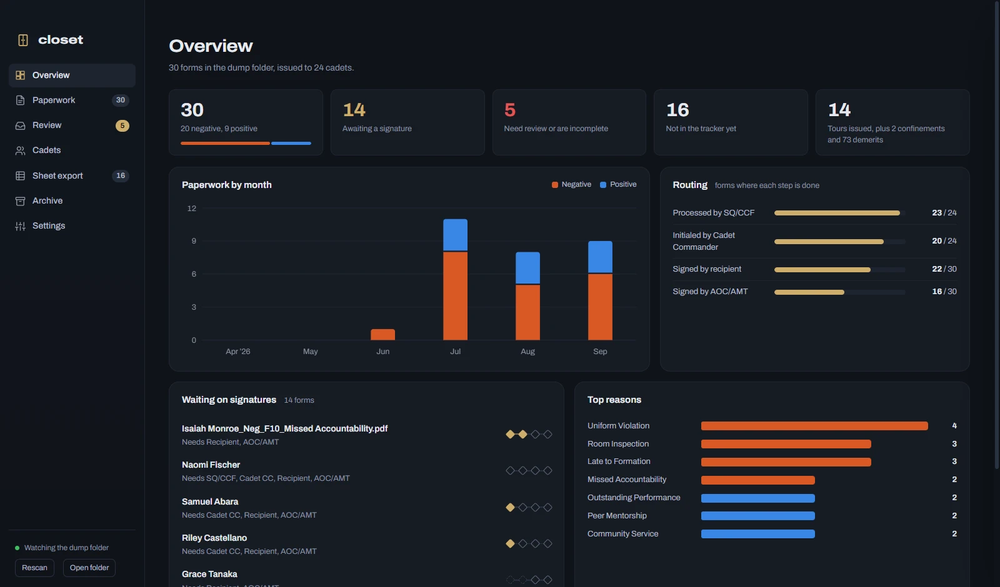
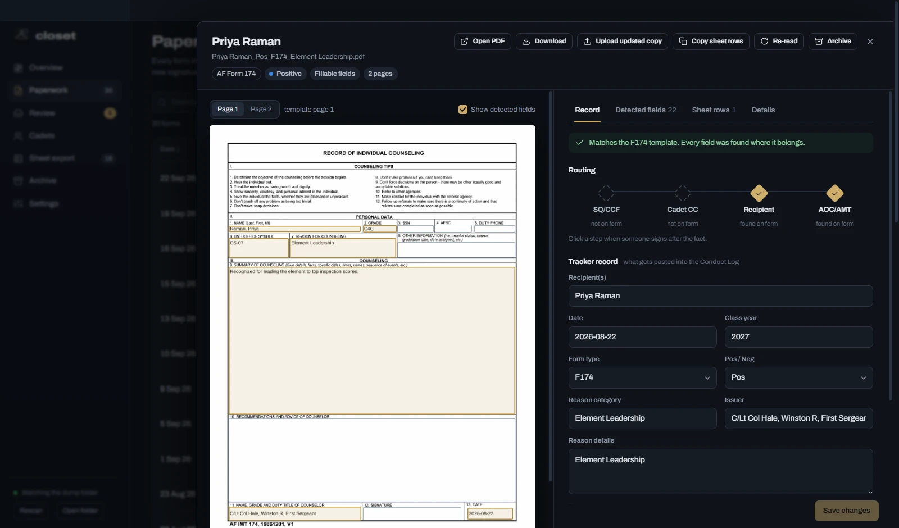
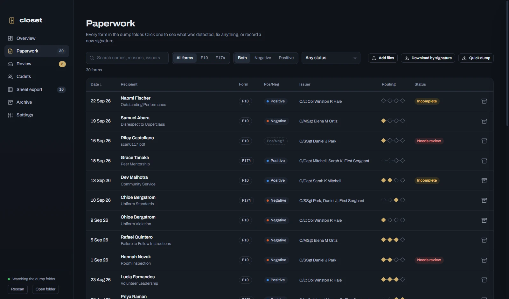
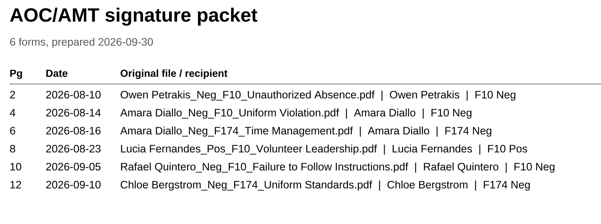
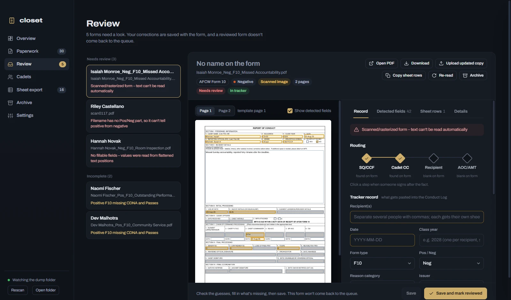
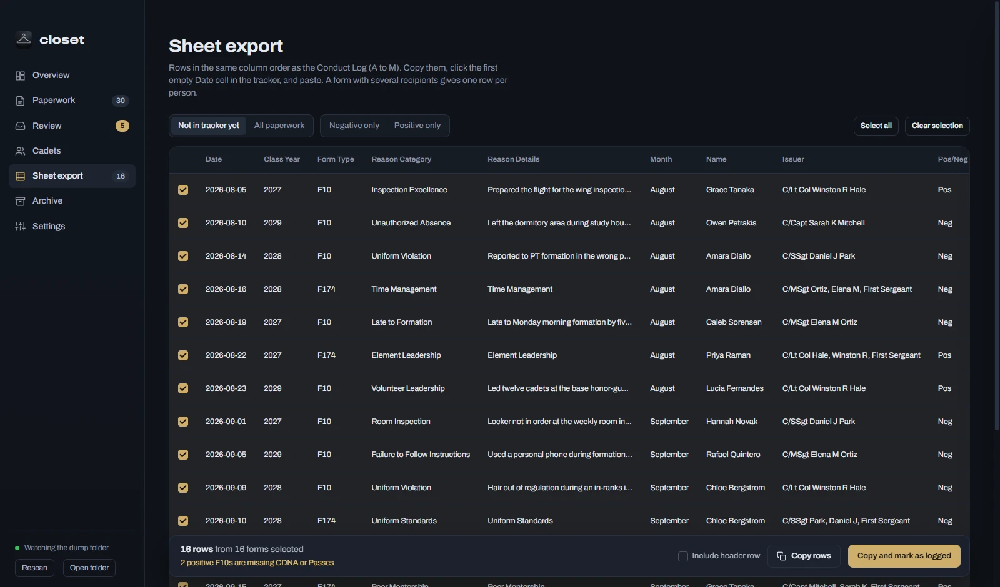

Every Form 10 and 174, and where it's stuck.
closet is a desktop app for the first sergeant. Drop in the paperwork and it shows which signature each form is waiting on, sorts the stack for your next signature run, and writes the Conduct Log rows for you.

Screenshots in this page use made-up paperwork.
Built around how a first sergeant's week goes.
Paperwork shows up in every shape.
Fillable PDFs, flattened copies, phone scans, a memo stapled on the front. closet reads all of them against the blank forms, so nothing gets retyped.
Signatures trickle in over days.
Each form travels through the SQ/CCF, the Cadet Commander, the recipient, and the AOC/AMT. closet shows which step every form is stuck on.
It all ends up in the tracker.
One click copies rows in the Conduct Log's column order, one per cadet, and remembers what you've already logged.
Reads the copy you actually got.
Forms get recreated, re-exported, flattened, and scanned, so field names can't be trusted. closet matches every box by where it sits and what kind of field it is, against the blank Form 10 and Form 174 built into the app.
- Fillable forms: fields match by position, even when they've been renamed or shifted a few points.
- Flattened copies: values come from the text inside each box, never the printed labels.
- Scans: pages are lined up against the blank form, and new ink shows which boxes and signatures are filled.
- Extra pages: an MFR stapled in front? The form pages are found anyway.

Shows who still has to sign.
closet reads each routing step off the form: SQ/CCF processing, Cadet Commander initials, the recipient's signature, the AOC/AMT signature. Wet ink, stamps, and digital signatures all count. When someone signs later, click the step.
- Print, sign, scan it back. Upload the scan over the old copy and closet keeps what it already read, swaps in the new pages, and sends the form back to Review so you can confirm the signatures yourself.
- Search and filter by cadet, form, reason, or what's still outstanding.
- A per-cadet view totals demerits, tours, and confinements.

Sorts the stack for your signature run.
Quick dump copies every active form into a folder for the first step it's still waiting on. Walk the SQ/CCF folder to the SQ/CCF, the Cadet Commander folder to the Cadet Commander, and so on. Anything with every step done lands in Fully complete.
The AOC/AMT folder also gets one PDF for printing: an index sheet listing each form by its original file name and date, followed by every form, page by page. Print once, hand over the stack.
- Only copies are made; your paperwork is never moved or changed.
- Need just one signature's worth? Download by signature copies the forms still waiting on it to a folder you choose.
Quick dump
- 1 - Needs SQ-CCF processing1
- 2 - Needs Cadet Commander initials3
- 3 - Needs Recipient signature4
- 4 - Needs AOC-AMT signature6
- 5 - Fully complete16

Asks a person only when it has to.
A scan it can't read, a form with missing fields, a filename without Pos or Neg: those go to a review queue with the guesses already filled in. Fix what's wrong once and the form never comes back.
- Positive Form 10s wait on the incomplete list until CDNA and Passes are entered.
- Two names a letter apart? It asks whether they're the same cadet, then remembers the answer.
- Redundant paperwork can be archived: kept, but left out of every count and export.

Pastes straight into the tracker.
Sheet export lists rows in the Conduct Log's column order. Copy them, click the first empty Date cell, paste. A form with several recipients becomes one row per cadet, and whatever you've logged is marked so nothing goes in twice.
Filter to only positive or only negative paperwork when you're entering one kind at a time.

Paperwork stays on your computer.
No accounts, no cloud, no uploads. Your PDFs stay where you put them and are never moved or changed. Everything closet learns, including your edits, lives in a metadata folder beside them, so a backup is copying two folders.
Installed copies on Windows and Linux check this project's releases now and then, and update themselves when you close the app. That is the only thing closet ever fetches from the internet.
Download closet
Free for Windows, macOS, and Linux. MIT licensed.
Windows
Windows 10 or 11. The installer adds Desktop and Start Menu shortcuts and keeps itself up to date; the portable version runs without installing.
macOS
macOS 11 or later. Not notarized yet: the first time, right-click the app and choose Open. Download new versions from here; it can't update itself yet.
Linux
64-bit Linux. The AppImage runs anywhere and keeps itself up to date; the .deb installs on Debian and Ubuntu.
Building from source: npm install, then npm start to run or npm run dist to make an installer for your system. The blank forms come with the app, and closet keeps your paperwork in its own data folder; you add PDFs by dragging them onto the window.